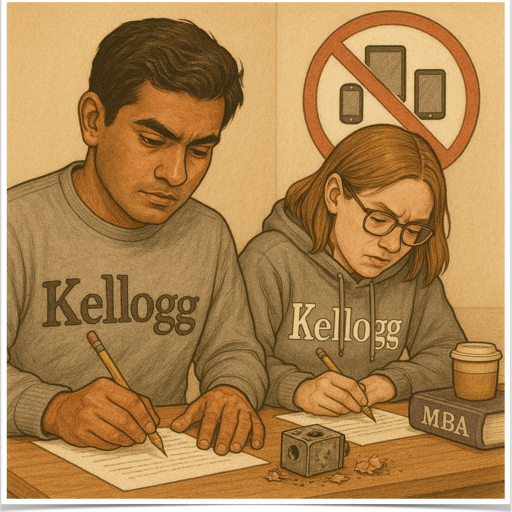
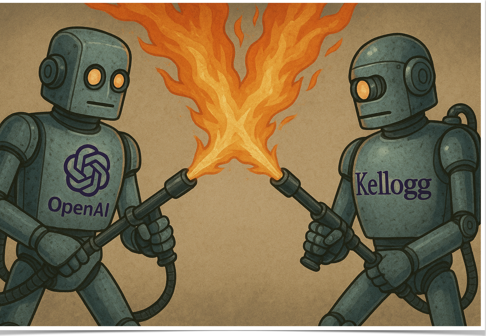
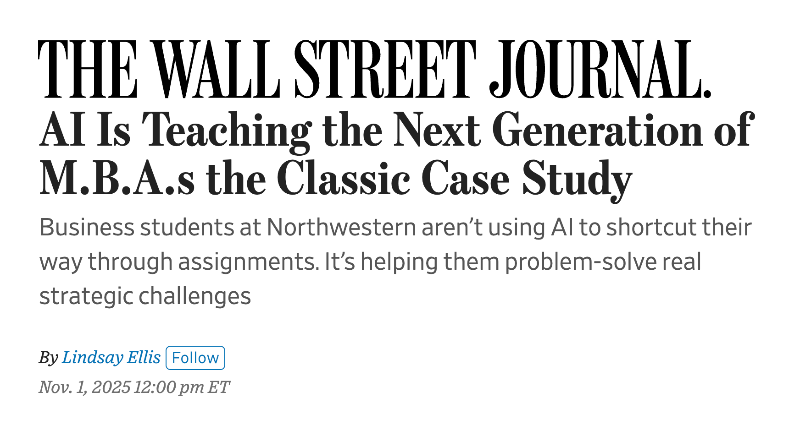

Northwestern|Kellogg
Building
with AI
Sébastien MartinAssociate Professor of Operations · Northwestern Kellogg
Kellogg Leadership Circle Webinar · October 7, 2026
Kellogg Leadership Circle Webinar · October 7, 2026
Welcome
Poll: do you use one of these regularly?
ChatGPT
OpenAI
Claude
Anthropic
Gemini
Google
Welcome
Poll: have you ever tried one of these?

Claude Code & Cowork
Anthropic
Codex & Work
OpenAI
Welcome
Poll: have you ever tried one of these?
OpenClaw
Open source
Hermes
Nous Research
Muse
Meta
Dots
OpenAI
Instinct
Startup
Welcome
How I relate to AI
Research
Deployment of AI and algorithms
Teaching
“AI Foundations for Managers”
Leveraging AI to improve education
Leveraging AI to improve education
Industry
Board member, ESAB
Focusing on AI strategy
Focusing on AI strategy
My family
Our son was born on July 31. Figuring out what the world will be when he grows up.

Welcome
Roadmap
1
What happened in just four years
2
So what should we do about it?
3
Case study: changing how we teach at Kellogg
4
Your questions
With as many live demos as possible
What happened in just four years
What happened in just four years
Large Language Models: a fancy “autocomplete”
What happened in just four years
Ask a question, get an answer
2022–23
2024
2025
2026
Question
→
→
Answer
What happened in just four years
AI that uses tools
2022–23
2024
2025
2026
Designing AI workflows for companies

What happened in just four years
Agents that do the work
2022–23
2024
2025
2026
Claude Code
Codex
What happened in just four years
Not just code: anything
2022–23
2024
2025
2026
OpenClaw
Open source
Hermes
Nous Research
Muse
Meta
Dots
OpenAI
Instinct
Startup
What happened in just four years
A 90-year-old math problem,
solved in 88 hours
solved in 88 hours
×
Hugging Face
How 700 AI agents
committed a felony
committed a felony
So what should we do about it?
So what should we do about it?
AI Foundations for Managers: AgentOps
No prerequisites
Five weeks
One real business problem
So what should we do about it?
A gift from the Class of 2026
Sonia: reminds patients to take their medication, and asks how they feel
Jackie: turns anonymous employee feedback into signals leaders act on
Daniel: one realistic negotiation practice round every day
Soham: decides what to restock, hold, or clear, item by item
Matt: checks if a factory line can make a new product
sebastienmartin.info/aiml901/showcase
and about 180 more
Vincent: helps students brainstorm their future careers
Renee: does a VC analyst's first pass on startup pitches
Richa: a student support bot for a nonprofit in India
Connor: walks first-time homebuyers through the big decision
So what should we do about it?
There are no AI experts.
Or: we can all become one.
So what should we do about it?
Live demo
My advice: build, build, build
🧞
If you haven't started yet, start today.
So what should we do about it?
What I would do if I were you
AI is getting easier by the day
AI rewards non-AI expertise
Ask for more than you think it can do
Use it more than you think you should
So what should we do about it?
What getting started actually feels like
Everyone dips first. The one thing that predicts success: how involved you stay.
So what should we do about it?
Opinion timeLive demo
Where is this all going?
Case study: changing how we teach at Kellogg
Case study: changing how we teach at Kellogg
Navigating a technology disruption


Case study: changing how we teach at Kellogg
Putting AI inside the teaching
Kai, the AI teaching assistant
→
AI homework
→
AI case studies
→
Content generation
Using AI to give instructors superpowers
Case study: changing how we teach at Kellogg
Live demo
Cases you can talk to

A real business case you can interview the characters of, built with NoYes AI and written up by the WSJ.
Case study: changing how we teach at Kellogg
Kellogg's plan: AI through every lens
One AI foundations course per department, each through its own lens. The Operations one is my AgentOps. Plus a student-founded AI Lab, now a credited course, and the Kellogg AI Club.
Thank you
Build, build, build
The slides, the links, and an assistant to keep exploring:
sebastienmartin.info/p/building-with-ai.html